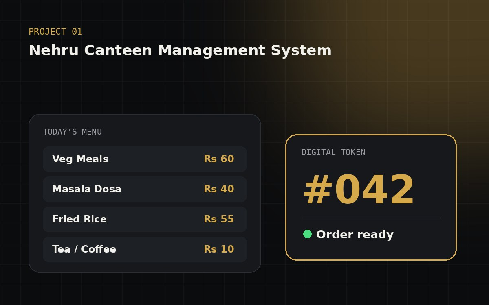

🏆 1st Place · Celestra '261stCelestra '26 Software Expo
TokenBased order flow
Full-stackFlask + MySQL
Python
Flask
MySQL
HTML
CSS
JavaScript
Project 01 · Final-year project
Nehru Canteen Management System
A web-based canteen system for Nehru College that replaces long counter queues with online ordering, digital tokens and live order tracking.
- Students and staff order food online and make payments
- Every order gets a digital token for quick pick-up
- Live order tracking with food category management
- Reports for canteen staff to review sales and orders